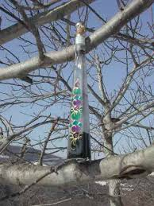
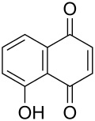
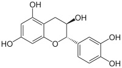
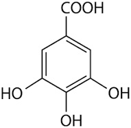
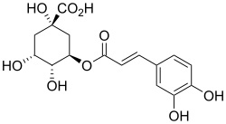
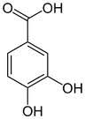

Visto il mio vecchio noce commentato in atmosfera invernale, l'amico Marco mi invita, credo scherzosamente, a meditare sull'estrazione dello juglone dai malli delle noci.
Non è per niente una cattiva idea... ma ho già fatto questo lavoretto!
L'ho fatto in maniera poco chimica in verità, tant'è che il recipiente ultimo di reazione non è un pallone o una beuta ma una affusolata bottiglietta dove il prodotto, o meglio quello che ne resta, si trova più a suo agio.
Ecco qui sotto, fra i rami di un nocello giovane e ora spoglio che a suo tempo mi ha fornito i frutti, la sperimentale estrazione che ho fatto l'altr'anno.

Ne era venuto un nocino da fine del mondo, messo in cantiere come si deve proprio il giorno di San Giovanni, perchè non si dica poi che non si è fatto tutto in regola.
Per un chimico le prove organolettiche sono ancor più di soddisfazione rispetto a un comune mortale; per esempio vengono assurdi pensieri come:
-guarda che bel colore ambrato sempre più scuro che conferisce questo juglone (che è un naftochinone) al nocino che invecchia!
-anche la catechina (un flavanolo) contribuisce all'aspetto, ma quanto?
-che sia sovrastante il suo colore o il suo gusto astringente?
-non par di sentire, all'assaggio attento, quella "legatura" tannica dell'acido gallico?
-ma che gusto questa deliziosa mix di polifenoli!
... e così via ragionando... discorsi da fuori di testa dirà qualcuno al quale la chimica sta leggermente indigesta.
Tornando in ambito chimico, ho visto girovagando in rete un bel lavoro sloveno proprio sull'estrazione dei polifenoli dallo Juglans regia, ovvero dal nostrano pregiato noce bianco.
Il contenuto in juglone è abbastanza elevato (una quindicina di mg per grammo di noce verde), ma la separazione del medesimo da tutto l'estratto (il quale si può fare comodamente con i primi due alcoli), non è certo facilmente fattibile, o almeno non lo è con i miei mezzi.
L'estratto di noce verde, che in definitiva non è altro che un "nocino" non zuccherato e non aromatizzato, contiene una bella serie di polifenoli (in genere sotto forma di glicosidi), tutte sostanze fortemente antiossidanti.
Eccoli qui:

Juglone (relativamente tossico, 5-idrossinaftochinone 15 mg/g)

Catechina (colorante, astringente, 0,15 mg/g)

Acido gallico (3,4,5-triidrossibenzoico, astringente, 0,7 mg/g)

Acido clorogenico (un estere dell'acido 3,4-diidrossicinnamico, 0,05 mg/g)

Acido protocatechico (3,4-diidrossibenzoico, 1 mg/g)
Quando bevete un vero nocino modenese, siete avvertiti voi allergici alla chimica!
1 commenti